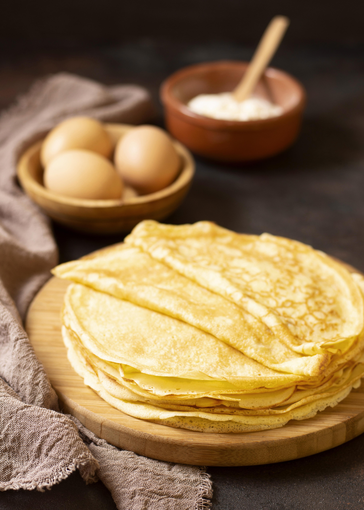

Crepe (dulce)

Para: 6 personas
Contiene huevo
Sin gluten
Sin lácteos
Ingredientes
| Ingrediente | Cantidad |
|---|---|
| Harina | 250 g |
| Leche | 500 ml |
| Huevos | 3 |
| Mantequilla derretida | 50 g |
| Azúcar | 1 cucharada |
| Sal | 1 pizca |
Utensilios
- Bol grande
- Batidor de varillas
- Sartén antiadherente
- Cucharón
- Espátula
Preparación
- Mezcla en un bol la harina, leche, huevos, mantequilla, azúcar y sal.
- Bate hasta obtener una masa líquida sin grumos.
- Deja reposar la masa en la nevera unos 30 minutos.
- Calienta una sartén engrasada y vierte un cucharón de masa.
- Cocina 1–2 minutos por cada lado hasta que estén dorados.